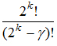
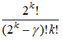
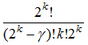
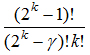
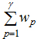

электронный
ресурс по учебной дисциплине
1-40 02 01 «Вычислительные машины, системы и сети»
|
||
| Оглавление | Программа | Теория | Практика | Контроль знаний | Об авторах | ||
Г л а в а 25
Кодирование состояний синхронного автомата
25.1. Задача кодирования состояний
В абстрактной модели автомата M = (A, B, Q, ψ, φ) элементами множеств А, В и Q являются абстрактные символы. Как было сказано выше, для реализации заданного поведения в виде логической сети надо перейти от функций φ и ψ к системе булевых функций, т. е. от абстрактной модели автомата надо перейти к структурной модели. При этом переменные а, b и q заменяются векторными переменными:
Различным значениям многозначных переменных а, b и q должны быть поставлены в соответствие различные значения векторных переменных х, у и z. Векторы х, у и z показывают структуру абстрактных символов а и b и состояния q. Элементами этой структуры являются соответственно двоичные сигналы и состояния двоичных элементов памяти. Функции φ и ψ преобразуются соответственно в векторные функции φ(x, z) = у и ψ(x, z) = z+, а те, в свою очередь, – в систему булевых функций, число которых m + k:
Числа п, т и k должны удовлетворять соотношениям α ≤ 2п, β ≤ 2т и y ≤ 2k, где α, β и y – числа абстрактных входных и выходных символов и состояний соответственно. Минимальные значения этих величин определяются как п = |log2 α|, т = |log2 β | и k = |log2 y |, где |а| означает минимальное целое число, не меньшее а.
Векторы, приписываемые различным абстрактным символам и состояниям в случае синхронного автомата, могут быть выбраны произвольно с одним лишь ограничением на число компонент, указанным выше, но если принимать во внимание простоту комбинационной схемы, реализующей заданное поведение, то различные варианты кодирования неравнозначны. Часто на практике используется модель автомата с абстрактным состоянием, где векторы х и у заданы и остается только закодировать многозначную переменную q. В дальнейшем будем считать, что структура входных и выходных сигналов задана, т. е. векторы х и у заданы, и будем рассматривать только кодирование состояний, т. е. замену значений многозначной переменной q значениями вектора z..
Чтобы показать неравнозначность выбора вариантов кодирования, приведем следующий простой пример из работы [20]. Пусть табл. 25.1 представляет собой таблицу переходов и выходов заданного автомата, а табл. 25.2 – два варианта кодирования его состояний.
Соответствующие системы булевых функций представлены матрицами U1, V1 для варианта 1 и U2, V2 для варианта 2:.
После минимизации данных систем булевых функций получим следующие системы ДНФ в матричном представлении:
Отсюда ясно видно, что, выбрав вариант 2 для кодов состояний заданного автомата, получим более простую систему ДНФ.
Можно подсчитать, сколько всего различных и неравнозначных вариантов кодирования существует для конкретного автомата. Пусть y – число состояний автомата и k – минимальная длина булева вектора, кодирующего состояние. Тогда число различных вариантов кодирования равно числу размещений 2k элементов по y позициям, т. е.  . Если учесть то, что перестановка столбцов дает равнозначные варианты, то получим . Можно считать равнозначными варианты, получаемые друг из друга путем инвертирования значений внутренних переменных. Тогда получим или . Ясно, что перебрать все варианты реально только при небольшом числе состояний автомата. Если же число состояний достаточно велико, то для выбора не самого плохого варианта кодирования необходимо применять более изощренный способ, чем полный перебор.
25.2. Метод «желательных соседств»
Рассмотрим задачу упрощения только функций состояний памяти при кодировании состояний автомата, хотя при некотором усложнении используемого критерия можно добиваться упрощения и выходных функций.
Каждой паре состояний qi, qj автомата с множеством состояний Q = {q1, q2, … , qy} припишем вес wij = w’ij + w’’ij, где w’’ij – число столбцов таблицы переходов, в которых строки qi и qj имеют одинаковые элементы, т. е. число значений переменной а, при которых ψ(a, qi) = ψ(a, qj), а w’ij определяется следующим образом. Пусть wp – число пар вида <ψ(as, qp), ψ(at, qp)>, где входные символы as и at имеют соседние коды, ψ(as, qp) = qi и ψ(at, qp) = qj. Тогда w’ij =  .
Желательно, чтобы коды состояний qi и qj были тем ближе друг к другу, чем больше величина wij. Здесь имеется в виду расстояние в гиперкубе, представляющем пространство кодирующих переменных, между вершинами, соответствующими данным кодам. Для объяснения такого правила приведем следующие соображения..
Общий вид матриц U и V, задающих систему булевых функций zj+ (j = 1, 2, … , k), представим следующим образом:
где (xs1, xs2, … , xsn) и (xt1, xt2, … , xtn) – соседние векторы, являющиеся кодами входных символов as и at и представляющие совокупности входных двоичных сигналов, а (zp1, zp2, … , zpk), (zi1, zi2, … , zik) и (zj1, zj2, … , zjk) – коды состояний qp, qi и qj соответственно.
Здесь отражена ситуация, которая учитывается при подсчете значения w’ij. Пара вектор-строк (xs1, xs2, … , xsn, zp1, zp2, … , zpk) и (zi1, zi2, … , zik) матриц U и V представляет переход автомата из состояния qp в состояние qi при входном символе as, выражаемый формулой ψ(as, qp) = qi. Точно так же пара строк (xt1, xt2, … , xtn, zp1, zp2, … , zpk), (zj1, zj2, … , zjk) представляет переход, выражаемый формулой ψ(at, qp) = qj. Отсюда видно, что чем больше одноименных компонент векторов (zi1, zi2, … , zik) и (zj1, zj2, … , zjk), являющихся кодами состояний qi и qj, совпадают и равны единице, тем больше, возможно, будет условий для простого склеивания элементарных конъюнкций в получаемой системе ДНФ.
Ситуация, учитываемая при подсчете значения w’’ij, представляется следующими матрицами:
Здесь пары строк (xu1, xu2, … , xun, zi1, zi2, … , zik), (zv1, zv2, … , zvk) и (xu1, xu2, … , xun, zj1, zj2, … , zjk), (zv1, zv2, … , zvk) представляют переходы в одно и то же состояние qv при одном и том же значении au переменной а, т. е. ψ(au, qi) = ψ(au, qj) = qv. Ясно, что желательно иметь соседними коды тех состояний qi и qj, для которых переменная а принимает много значений аи, удовлетворяющих ψ(au, qi) = ψ(au, qj). Тогда возможно простое склеивание элементарных конъюнкций, представленных показанными строками матрицы U.
Одна из реализаций метода «желательных соседств» представляется как процесс построение k-мерного гиперкуба, напоминающий сборку некоторой простой механической конструкции. При этом вершины гиперкуба, являющиеся первоначально вершинами некоторого пустого графа (без ребер), заранее поставлены в соответствие состояниям автомата и на парах этих вершин заданы величины wij.
Исходными данными для построения k-мерного гиперкуба являются величины wij и число состояний автомата y. Предполагается, что это число минимально или по каким-то причинам не подлежит минимизации. Если y не представляет собой целой степени двойки, то оно увеличивается до y‘ = 2k и считается, что wrs = 0, если хотя бы одно из qr и qs является дополнительно введенным таким образом состоянием.
Построение k-мерного гиперкуба представляется как последовательность k шагов. На p-м шаге рассматривается множество (p – 1) мерных гиперкубов, они объединяются в пары, и из каждой пары получается один p-мерный гиперкуб путем соответствующего добавления ребер. При этом по возможности для соединения ребрами выбираются те вершины, которым соответствуют наибольшие из оставшихся значения wij. Вершинам полученного гиперкуба приписываем k компонентные булевы векторы с соблюдением отношения соседства, представленного ребрами гиперкуба.
На первом шаге из y‘ изолированных вершин, или 0-мерных гиперкубов, строятся одномерные гиперкубы в виде y‘ / 2 попарно несмежных ребер. На последнем k-м шаге из двух (k – 1)-мерных гиперкубов собирается один k-мерный гиперкуб путем добавления 2k-1 ребер.
Продемонстрируем этот процесс на примере автомата, таблицей переходов которого является табл. 25.3. Введем два фиктивных состояния q7 и q8, чтобы довести число состояний до 8 = 23. Значения wij удобно задать в виде табл. 25.4, где строки и столбцы соответствуют состояниям автомата.
На первом шаге получаем четыре одномерных гиперкуба, изображенных на рис. 25.1. Максимальное значение имеет вес w23 = 3. Поэтому в первую очередь ребром соединяются вершины q2 и q3. Затем ребрами соединяются вершины q1 с q6, q4 с q5 и q7 с q8.
Чтобы из четырех одномерных гиперкубов получить два двухмерных, надо добавить четыре ребра. Для этого выбираются такие ребра, чтобы сумма их весов была максимальна. Сначала строится один гиперкуб, для которого выбираются два ребра с максимальной суммой весов. Затем точно так же собирается второй гиперкуб. На рис. 25.2 показаны варианты выбора ребер для получения первого двухмерного гиперкуба.
Вершины q7 и q8 здесь не участвуют, так как все инцидентные им ребра имеют нулевой вес и сумма их весов заведомо не максимальна. Максимальной суммой весов обладает четвертый вариант. Для второго гиперкуба все варианты одинаковы.
На рис. 25.3 изображены два двумерных гиперкуба, из которых надо собрать один трехмерный гиперкуб, добавив четыре ребра. Варианты такой сборки представлены на рис. 25.4. Сумма весов ребер показана ниже каждого изображения варианта сборки.
Для окончательного решения нашего примера выбран вариант сборки с максимальной суммой весов добавляемых ребер, равной 4. Этот гиперкуб показан отдельно на рис. 25.5, где возле каждой вершины представлен код соответствующего состояния.
Булев автомат, соответствующий данному варианту кодирования, представим тремя картами Карно, которые задают не полностью определенные функции z1+, z2+ и z3+ и строкам которых соответствуют состояния заданного автомата (рис. 25.6).
Минимизированная система булевых функций, описывающая заданное поведение, представляется следующими матрицами:
Для сравнения приведем минимизированную систему булевых функций, получаемую при произвольном кодировании, например, путем приписывания состояниям чисел от 0 до 5 в двоичной системе счисления согласно порядку номеров состояний. Матрица кодирования и матрицы, представляющие данную систему булевых функций, имеют следующий вид:
Последняя система ДНФ оказалась сложнее – число различных элементарных конъюнкций в ней на две больше, чем в предыдущей системе.
| (С) БГУИР |